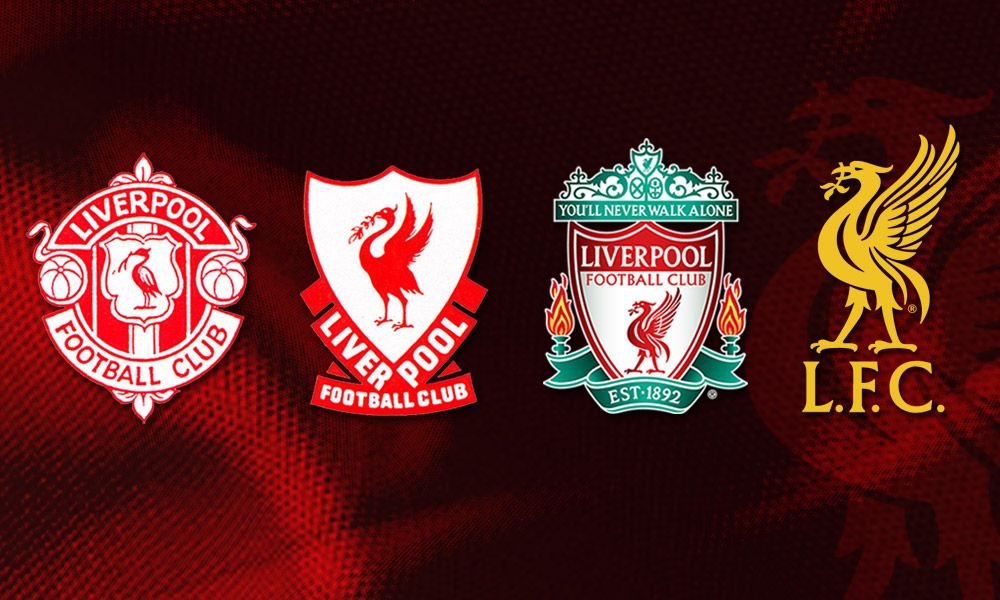
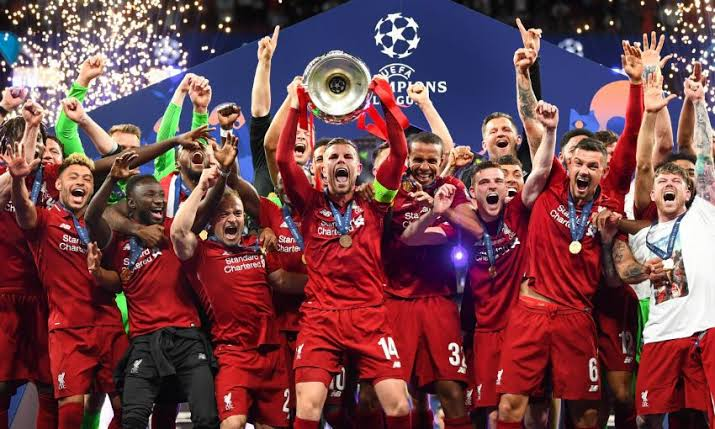
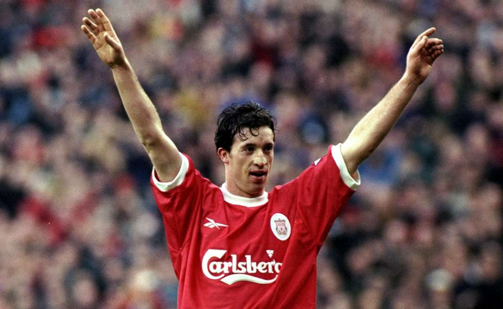

Sejarah

Liverpool Football Club (dikenal pula sebagai Liverpool atau The Reds) adalah sebuah klub sepak bola asal Inggris yang berbasis di Kota Liverpool.
Saat ini Liverpool adalah peserta Liga Utama Inggris.
Liverpool telah memenangkan 6 trofi Liga Champions UEFA (dulu Piala Champions) dan merupakan klub dengan pemegang gelar juara Liga Champions UEFA terbanyak di Inggris dan ketiga di Eropa setelah Real Madrid dan AC Milan[3].
Di kompetisi domestik, Liverpool adalah klub dengan 18 gelar juara Liga Inggris, 7 Piala FA, serta 7 kali juara Piala Liga.
Liverpool didirikan pada tahun 1892 dan bergabung dengan Football League pada tahun berikutnya. Klub ini telah bermain di Stadion Anfield sejak pembentukannya yang terletak sekitar 4,8 km dari pusat kota Liverpool.
Periode paling sukses dalam sejarah Liverpool adalah pada tahun 1970-an dan 1980-an ketika Bill Shankly dan Bob Paisley memimpin klub dengan sebelas gelar liga dan tujuh piala Eropa.
Liverpool memiliki sejarah persaingan yang panjang dengan klub tetangganya Everton dan juga dengan Manchester United. Persaingan dengan klub sekota terkenal dengan nama Derby Merseyside. Lagu kebangsaan klub adalah "You'll Never Walk Alone".
Prestasi

Total Liverpool telah mengoleksi 18 tropi Liga Utama Inggris. Selama 16 tahun Premiere League bergulir, Liverpool belum pernah memenangkan title tersebut sekalipun. Liverpool memegang rekor 7 tropi juara Piala Liga, selisish 2 dengan Aston Villa.
Liverpool pernah meraih gelar ganda dengan menjuarai Liga dan Piala FA pada tahun 1986. Mereka juga pernah memenangkan tiga trophi dalam satu musim sebanyak 2 kali – yang pertama mereka memenangkan Liga Inggris, Piala Liga dan Piala Champion pada tahun 1984, serta pada tahun 2001 dengan meraih Piala FA, Piala Liga dan Piala UEFA. Liverpool juga pernah meraih gelar ganda eropa dengan menjuarai Liga dan Piala Champion eropa pada tahun 1977.
Hingga saat ini Liverpool telah mengkoleksi 5 tropi Liga Champion yang merupakan terbanyak di Inggris serta ketiga terbanyak di dari seluruh klub dibawah Real Madrid dan AC Milan. Dengan meraih tropi Liga Champion ke 5 pada tahun 2005, Liverpool berhak mengenakan UEFA Badge of Honour[47], serta berhak memiliki tropi secara permanen.[48]
Topskor

Liverpool Football Club (FC) merupakan salah satu klub paling sukses yang bermain di Liga Inggris sepanjang sejarah. Berdiri sejak 3 Juni 1892, klub berjuluk The Reds ini memang memiliki banyak pemain hebat yang ditakuti di Britania Raya.
The Reds yang juga dikenal dengan gaya bermain menyerang ini mempunyai banyak pemain yang mampu mencetak banyak gol. Keberadaan mereka pun sering kali mengantarkan Liverpool sebagai juara di Liga Inggris. Lantas, siapa saja top scorer pemain Liverpool sepanjang masa? Yuk, cek daftarnya di bawah ini!
Robbie Fowler
Pemain Liverpool yang paling banyak melesakkan gol ke dalam jaring lawan dan sekaligus menjadi pencetak gol terbanyak di Liga Utama Inggris yakni Robbie Fowler. Bernama lengkap Robert Bernard Fowler, pemain sepak bola Inggris yang juga pernah menjadi manajer klub ini lahir di Liverpool 9 April 1975 .
Total bola yang berhasil dimasukkan oleh Robbie adalah 128 gol dengan jumlah pertandingan sebanyak 266. Memulai debutnya sebagai pesepak bola sejak 1993, dia juga pernah bermain sebagai striker untuk berbagai klub seperti Leeds United, Cardiff City, Blackburn Rovers, Perth Glory, hingga Manchester City.
Steven Gerrard
Berbicara tentang klub bola Liverpool tidak akan lengkap rasanya jika tidak menyebut Steven Gerrard. Pemain yang lahir di Whiston, Merseyside, Inggris ini merupakan mantan kapten sekaligus gelandang terbaik yang pernah ada di dunia sepak bola.
Steven George Gerrard telah mencetak 120 gol untuk 504 pertandingan selama bermain di Liga Utama Inggris. Hal ini pun menempatkannya sebagai pencetak gol terbanyak kedua sepanjang sejarah klub Inggris ini.
Selain sebagai top scorer di Liverpool, Gerrard juga telah empat kali memenangkan pemain terbaik Liverpool dan berhasil meraih medali perunggu untuk Ballon d’Or di tahun 2005.
Michael Owen
Memiliki nama lengkap Michael James Owen, mantan pemain sepak bola Inggris ini menjadi salah satu pencetak gol terbanyak sepanjang masa di Liverpool FC. Adapun jumlah bola yang dilesakkan ke kandang lawan yaitu 118 gol selama 216 pertandingan.
Selain sebagai pencetak gol terbanyak, Owen juga pernah memenangkan top scorer selama tujuh musim berturut-turut dan juga merupakan pencetak gol terbanyak di Liga Inggris pada musim 1997-1998 dan 1998-1999. Tidak hanya bermain untuk Liverpool, penyerang yang lahir pada 14 Desember 1979 ini juga pernah bermain untuk Real Madrid.
Luis Suarez
Jika Robbie, Gerrard, dan Owen memang merupakan pemain berkewarganegaraan Inggris, beda halnya dengan penyerang The Reds yang satu ini. Lahir dan besar di Uruguay, Luis Suarez memulai karir persepakbolaannya di Nacional, Uruguay sebelum berlabuh di Liverpool pada musim dingin 2011.
Luis Alberto Suarez Diaz menjadi top scorer keempat di klub asal Inggris ini dengan total 69 gol di dalam 110 pertandingan. Keahliannya dalam menyelesaikan bola-bola yang diumpan kepadanya membuat Suarez sempat dianugerahi gelar pemain terbaik oleh Professional Footballers’ Association (PFA) pada 2013-2014 dan menyabet Golden Boot di Liga Inggris.
Fernando Torres
Terakhir, top scorer pemain Liverpool sepanjang masa jatuh kepada Fernando Torres. Pemain yang bermain di posisi striker ini memulai karir sepak bolanya di Atletico Madrid sejak 1995 sebelum pindah ke Liverpool FC pada 2007.
Selama berkarir di The Reds, Fernando Jose Torres Sanz mencetak 65 gol dengan 102 total pertandingan. Di musim pertamanya saja, Torres bahkan telah berhasil membobol 24 jaring gawang dan menjadi pencetak gol terbanyak.